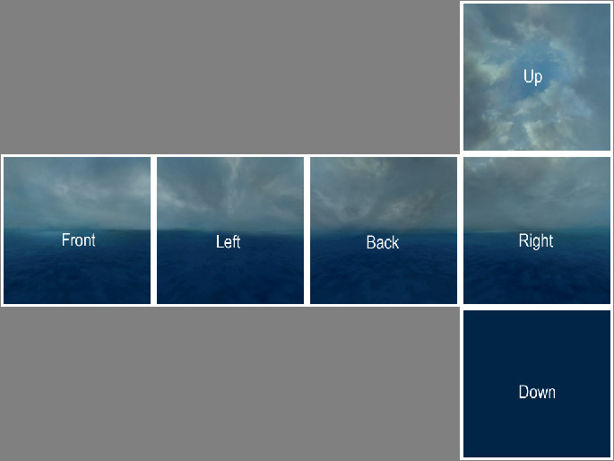

Skybox 2D
Un skybox 2D es un skybox que carece de profundidad geométrica, que consiste solo en una textura de skybox (sin usar la entidad sky_camera para mostrar un modelo en miniatura 3D).
Agregar cielo a un mapa
Simplemente texturice un pincel de mundo (no una entidad de pincel ) con tools/toolsskyboxo (si está mapeando para el cuadro naranja ) el tools/toolsskybox2dmaterial. En el juego, el skybox se verá a través de cada superficie a la que toolsskyboxse aplique. toolsskyboxNo es necesario que los pinceles tengan forma de caja.
Cambiar el palco que se muestra
Si no le gusta el cielo estándar "sky_day01_01", puede cambiarlo configurando el nombre del skybox en el cuadro de diálogo Propiedades del mapa de Hammer. Con el mapa correcto abierto, siga estos pasos:
- Ir al menú Mapa
- Elija Propiedades del mapa ... de la lista desplegable
- En la ventana Propiedades del objeto, seleccione el campo Nombre de textura de Skybox.
- Reemplace el cielo que aparece allí con el nombre del palco que desea mostrar.